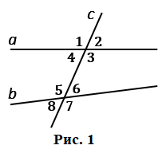
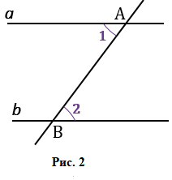
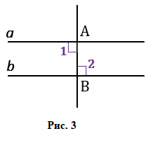
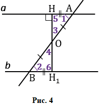
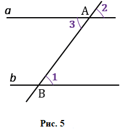
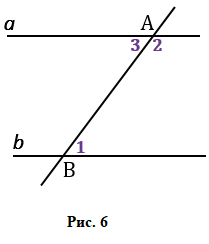

Прямая с называется секущей по отношению к прямым a и b, если она пересекает их в двух точках (Рисунок 1). При пересечении прямых a и b секущей с образуется восемь углов, которые обозначены цифрами.

Некоторые пары этих углов имеют специальные названия:
Теорема.
Если при пересечении двух прямых секущей накрест лежащие углы равны, то прямые параллельны.
Доказательство
Пусть при пересечении прямых a и b секущей АВ накрест лежащие углы равны: ∠1=∠2 (Рисунок 2).

Докажем, что a и b параллельны. Если углы ∠1 и ∠2 прямые (Рисунок 3), то прямые a и b перпендикулярны к прямой АВ и, следовательно, параллельны.

Рассмотрим случай, когда углы ∠1 и ∠2 не прямые (Рисунок 4).

Из середины отрезка АВ проведём перпендикуляр ОН к прямой a. На прямой b от точки В отложим отрезок ВН1, равный отрезку АН и проведем отрезок ОН1. Треугольники △ОНА и △ОН1В равны по двум сторонам и углу между ними (АО=ВО, АН=ВН1, ∠1=∠2), поэтому ∠3=∠4 и ∠5=∠6. Из равенства ∠ 3=∠ 4 следует, что точка Н1 лежит на продолжении луча ОН, т.е. точки Н, О и Н1 лежат на одной прямой, а из равенства ∠ 5=∠ 6 следует, что ∠ 6 - прямой. Итак, прямые a и b перпендикулярны к прямой НН1, поэтому они параллельны. Теорема доказана.
Теорема
Если при пересечении двух прямых секущей соответственные углы равны, то прямые параллельны.
Доказательство

Пусть при пересечении прямых a и b секущей с соответственные углы равны, например (Рисунок 5) ∠ 1= ∠ 2.
Так как углы ∠2 и ∠3 - вертикальные, то∠2=∠3. Из этих двух равенств следует, что ∠1=∠3. Но углы 1 и 3 - накрест лежащие, поэтому прямые a и b параллельны. Теорема доказана.
Теорема
Если при пересечении двух прямых секущей сумма односторонних углов равна 180, то прямые параллельны.
Доказательство

Пусть при пересечении прямых a и b секущей c сумма односторонних углов равна 180° например ∠1+ ∠2=180° (Рисунок 6).
Так как углы 3 и 2 - смежные, то ∠3+ ∠2=180°. Из этих двух равенств следует, что накрест лежащие углы 1 и 3 равны, поэтому прямые a и b параллельны. Теорема доказана.